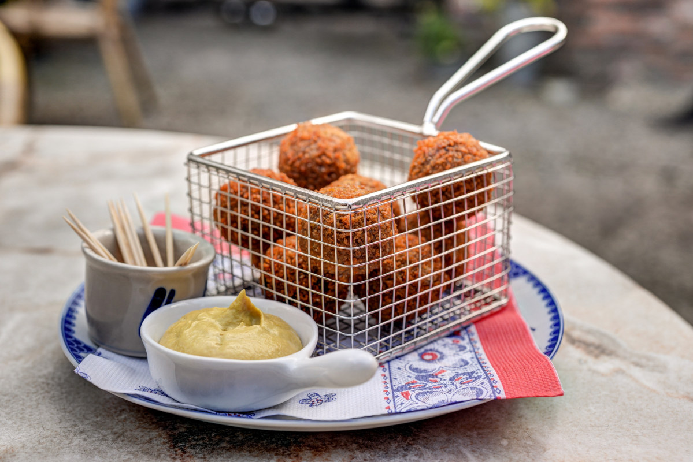
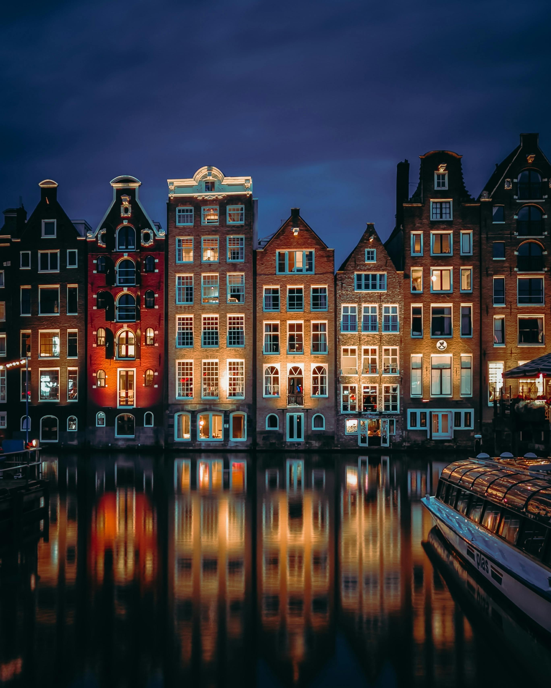
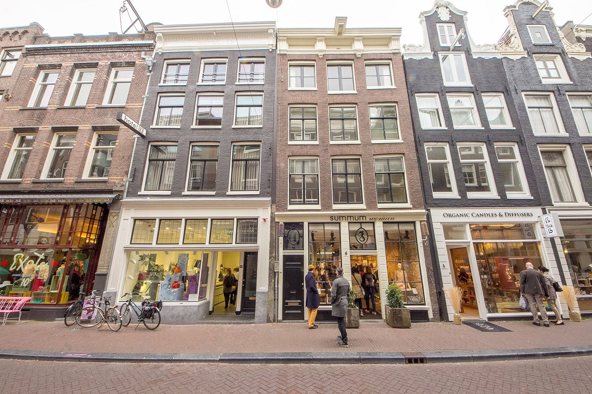
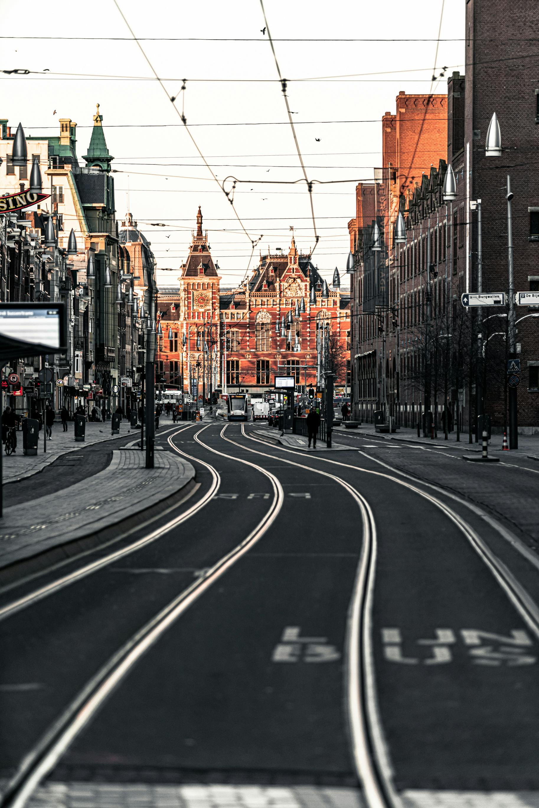
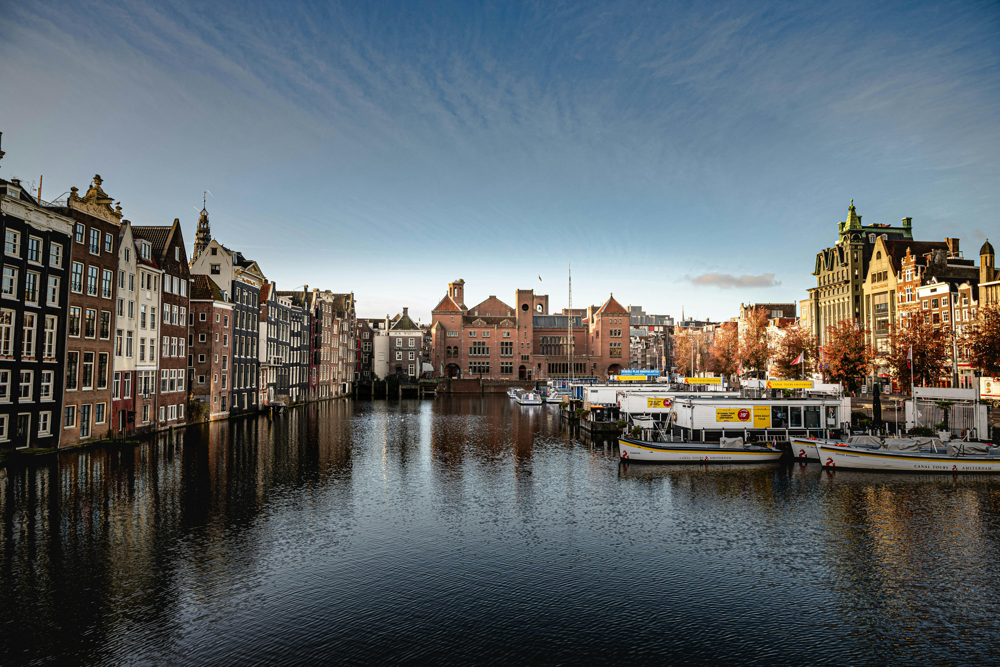

Explore Amsterdam
Everything you need to know before visiting
Essential Information
- Currency: Euro (€)
- Language: Dutch (English is widely spoken in tourist areas).
- Getting Around:
- -> Use OV-chipkaart for public transport (trams, buses, metro).
- -> Bicycles are the most popular way to get around. Bike rentals are available throughout the city.
- -> Walking is easy and enjoyable in central Amsterdam.

Top Attractions
- Rijksmuseum: A world-renowned museum showcasing masterpieces by Dutch artists like Rembrandt and Vermeer.
- Van Gogh Museum: Dedicated to the life and works of Vincent van Gogh.
- Anne Frank House: Explore the secret annex where Anne Frank wrote her famous diary during WWII.
- Canal Cruises: Admire the iconic canals and historic architecture from the water.
- Dam Square: The bustling heart of Amsterdam, home to the Royal Palace and National Monument.
- Vondelpark: A peaceful retreat for walking, cycling, and picnicking.

Best Restaurants
- Traditional Dutch Cuisine:
- Moeders: Famous for its Dutch home-cooked meals.
- The Pantry: Offers hearty Dutch dishes like stamppot and bitterballen.
- Seafood:
- The Seafood Bar: Known for its fresh fish and shellfish.
- Stroop: A great spot for Dutch pancakes and fresh herring.
- International Cuisine:
- Foodhallen: An indoor food market with a variety of international dishes.
- Restaurant Blauw: Specializing in Indonesian rijsttafel.
- Desserts and Snacks:
- Van Stapele Koekmakerij: Famous for its cookies.
- Winkel 43: Renowned for its apple pie.
- Febo: Try the vending machine-style snacks like kroketten.

Best Time to Visit
- Spring (April to May): Witness the tulip season and enjoy mild weather.
- Summer (June to August): Great for outdoor activities and festivals.
- Fall (September to November): Fewer crowds and vibrant autumn colors.
- Winter (December to February): Experience the Amsterdam Light Festival and cozy winter vibes.

Shopping in Amsterdam
- Kalverstraat: Amsterdam’s busiest shopping street, offering a mix of high-street brands, department stores, and international fashion.
- 9 Streets (De Negen Straatjes): A charming neighborhood with boutique shops, vintage stores, and unique local fashion.
- Leidsestraat: A popular street with both high-end shops and trendy fashion stores, perfect for those looking to browse.
- Albert Cuyp Market: A bustling street market in the De Pijp district, ideal for souvenirs, local products, and fresh food.
- Magna Plaza: A grand shopping mall housed in a former post office, offering a variety of luxury brands and shops.
- Haarlemmerstraat & Haarlemmerdijk: Known for its diverse range of shops, from quirky fashion stores to artisanal goods.

Tips for Tourists in Amsterdam
- Public Transport: Purchase an OV-chipkaart for easy access to trams, buses, and metro.
- Cycling: Rent a bike to explore the city like a local but follow cycling rules.
- Booking: Book popular attractions (Anne Frank House, Van Gogh Museum) in advance to avoid long queues.
- Avoid Peak Hours: Visit tourist spots early in the morning or late in the afternoon to avoid crowds.
- Tipping: Not mandatory but appreciated; round up to the nearest euro in restaurants.
- Local Etiquette: Don’t walk in bike lanes, and respect the locals’ need for space in crowded areas.

Bonus Experiences in Amsterdam
- Day Trips:
- Zaanse Schans: A nearby village with traditional windmills and crafts.
- Keukenhof Gardens: Famous for its stunning tulip displays (spring only).
- Volendam & Marken: Quaint fishing villages with old-world charm.
- Hidden Gems:
- NDSM Wharf: A trendy area with street art and creative spaces.
- Begijnhof: A peaceful courtyard hidden in the heart of the city.
- Nightlife:
- Enjoy vibrant nightlife in areas like Leidseplein and Rembrandtplein.
- Visit bars like Café Hoppe or try canal-side dining.
- Specialty Coffeeshops: Explore Amsterdam’s famous coffeeshop culture responsibly.
